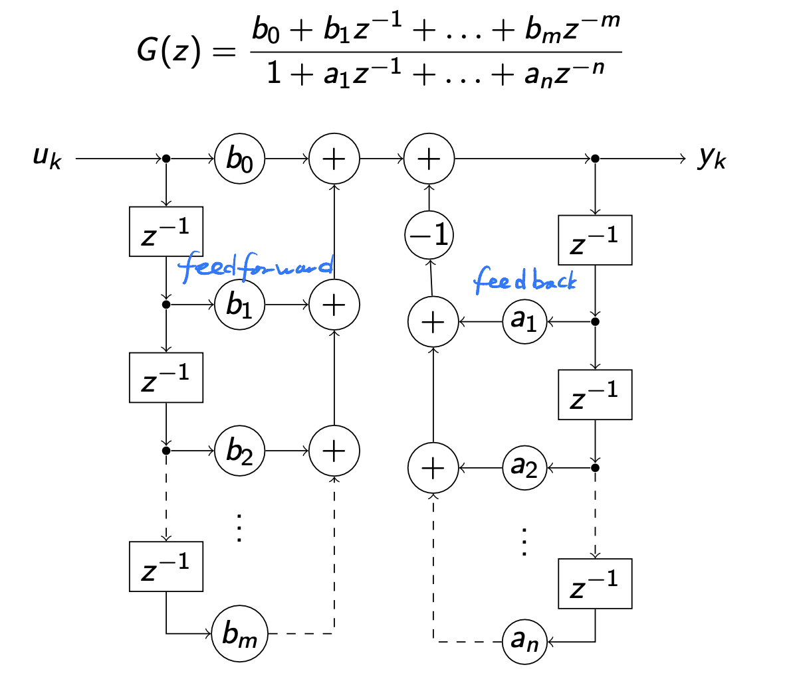
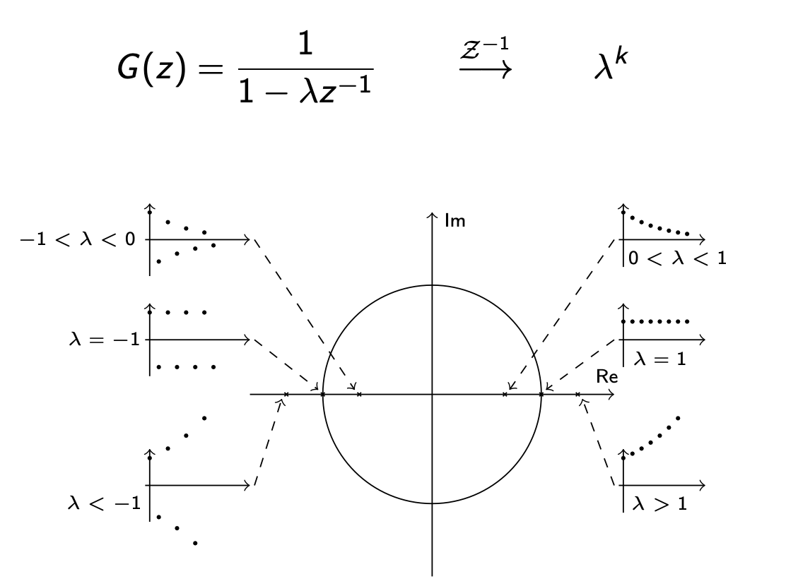
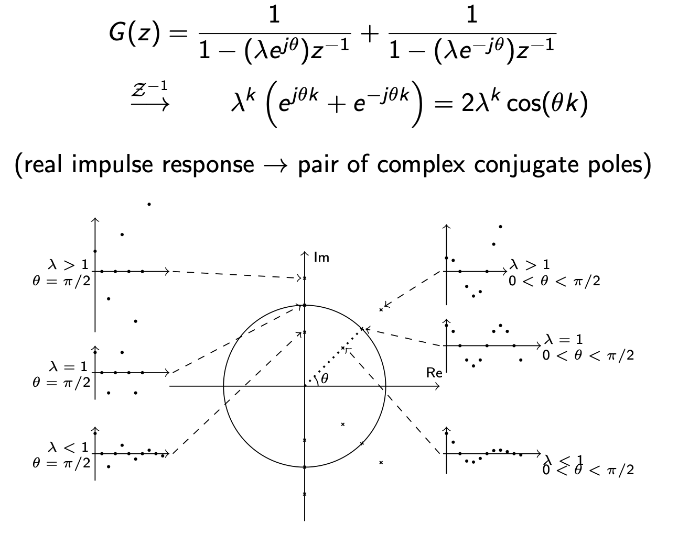
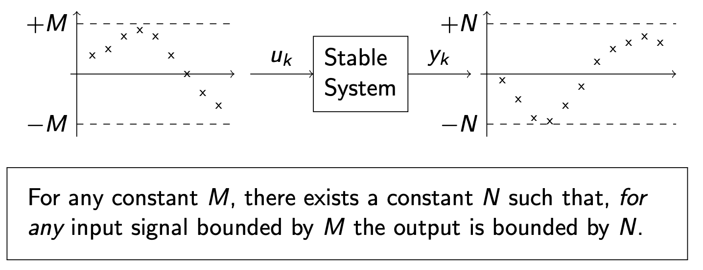
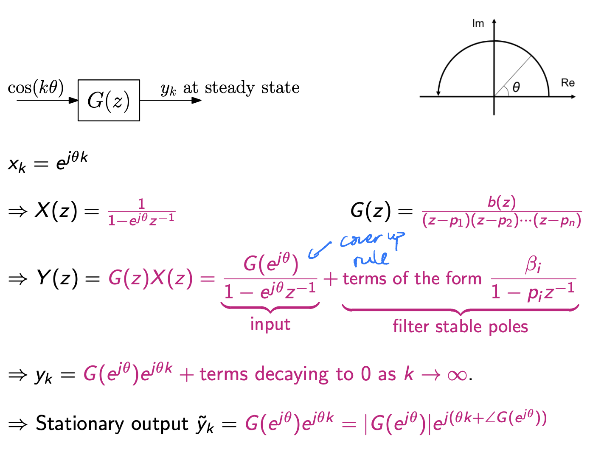
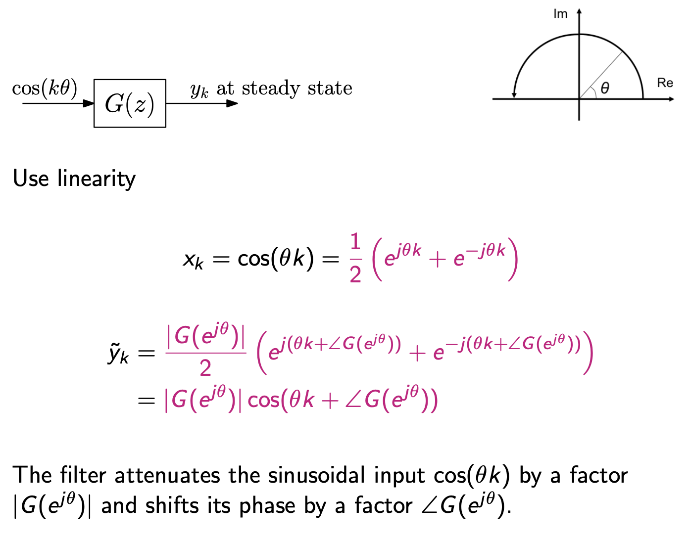
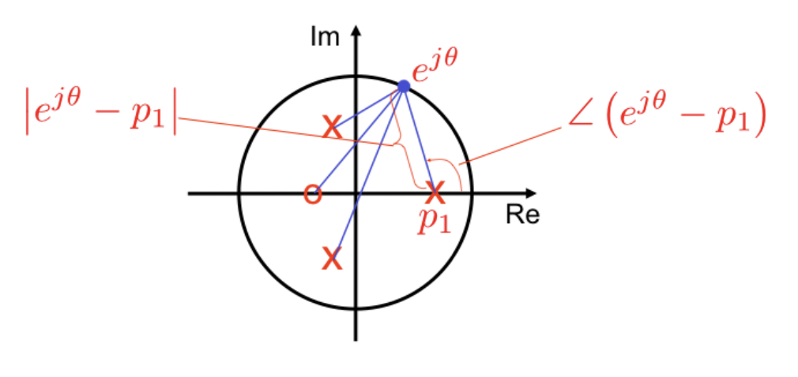
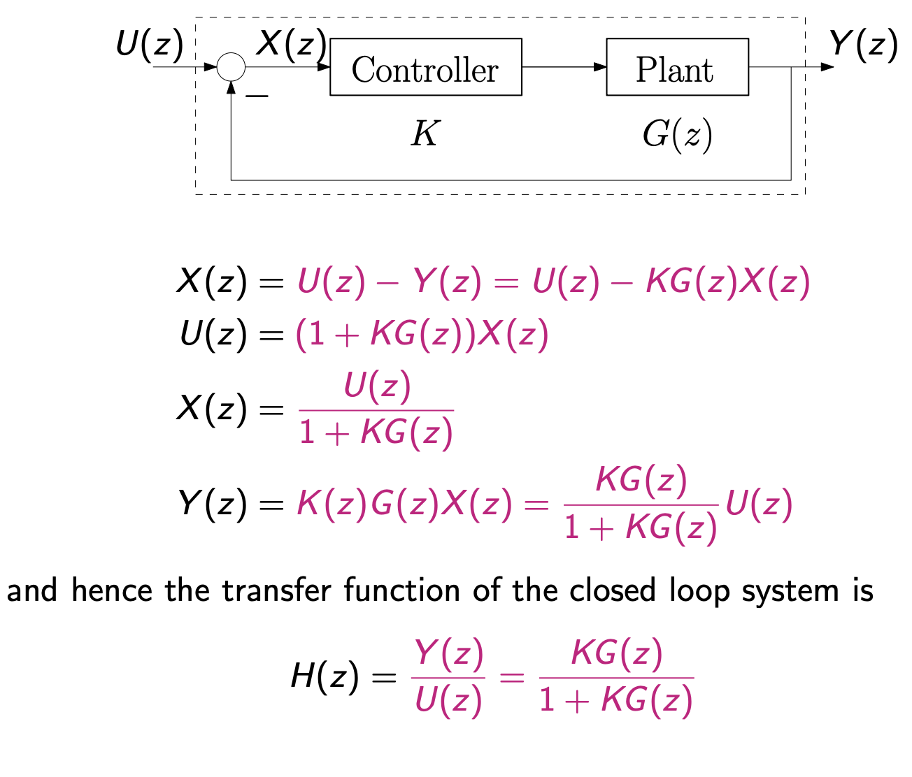
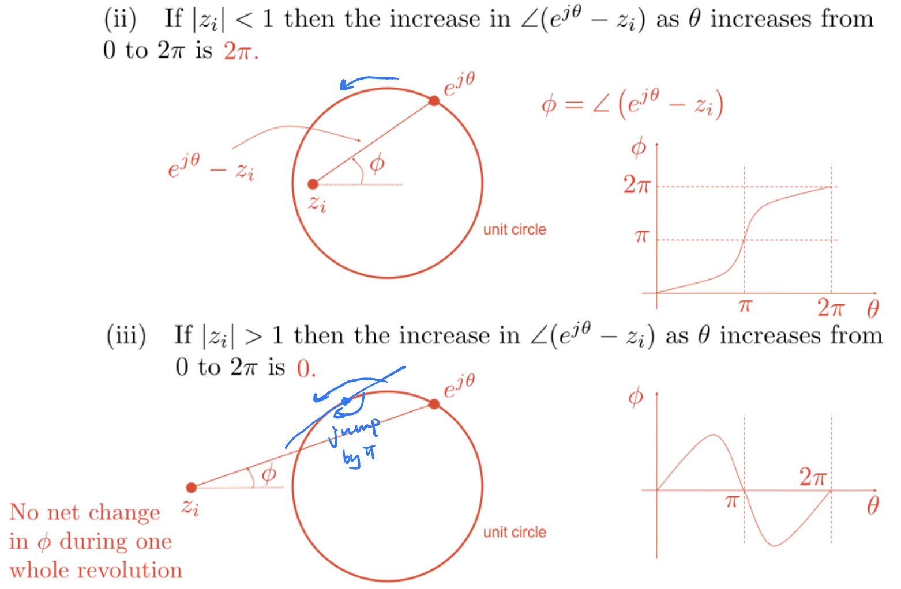

1 Discrete time Systems
I. Introduction¶
1. Digital vs discrete-time¶
- Digital: discrete in time and amplitude - sample and quantised
- Discrete-time: discrete in time only - sample but not quantised
2. Continuous to discrete time¶
| Continuous time | Discrete time | |
|---|---|---|
| Signals | Functions \(s(t)\) of \(t\) | Sequences \(s_k\) indexed in \(k\) |
| Systems | Differential equations | Difference equations |
3. Discrete time signals¶
- Right-sided signals: \(\mathbf{s}= (s_m, s_{m+1}, s_{m+2}, ...). s_k =0 \text{ for } k < m\)
- Left-sided signals: \(s_k = 0 \text{ for } k < m\)
- Right-sided signal starting at zero - semi-finite sequence \(\mathbf{s} = \{s_k\}_{k \geq 0} = s_0, s_1, s_2\)
4. Normalised sampling¶
- Discrete time signal could be a sampled continuous signal:
- Normalised time and frequency:
- Sampling period \(T = 1 \,\text{second}\)
- Sampling frequency \(f_s = 1\,\text{Hertz}\)
- Normalised frequency \({\theta_s} = 2 \pi \,\text{radians per second}\)
- Normalised frequency \(\theta\) -> true frequency
5. Discrete Time Systems¶
- Discrete time signal in, discrete time signal out
- Definition of linear time-invariant (LTI) is the same as for continuous time systems
- Discrete LTI systems are governed by linear difference equations
6. The Kronecker Delta signal¶
- Defined as:
- Input signal \(\{u_k\}\) to an LTIS can be written as
- By superposition principle (linearity + time invariance), the output signal \(\{y_k\}\) satisfies:
where \(\{g_k\}\) is the response of the LTIS to a delta input - the delta response of the LTIS -> equivalent to the difference equation in describing the LTIS
7. Discrete convolution¶
- Discrete convolution:
- Also denoted \(y = g * u\)
- Convolution is commutative:
- For semi-infinite sequences \(y = \{g_k\}_{k\geq0} * \{u_k\}_{k\geq0}\) simplifies to
8. Properties of the Delta response¶
- Finite Impulse Response (FIR):
- Infinite Impulse Response (IIR):
$$ {g_k}_{k\geq0} = {g_0, g_1, g_2, g_3} $$ does not terminate
- If \(\{g_k\}_{k\geq0}\) is a semi-finite sequence,
the current output only depends on current and past inputs \(\Rightarrow\) The LTIS is causal
II. The \(z\) transform and the DTFT¶
1. Convolution and power series¶
- Define a power series $$u(D) = u_0 + u_1D + u_2D^2 + u_3D^3 ... $$
- Convolution of semi-infinite sequences is equivalent to multiplication of power series:
2. The \(z\) transform¶
- For a signal \(\{u_k\}\), the \(z\) transform is defined as:
- This is equivalent to the generic transform above with \(D = z^{-1}\)
- The negative power is adopted by analogy with the Laplace transform
- \(\{u_k\}\) is not assumed to be one-sided, but the z transform ignores all signal values at negative times
3. Region of convergence (ROC)¶
- Consider the geometric sequence \(\mathbf{u}=\left\{u_k\right\}_{k \geq 0}=\left\{1, q, q^2, q^3, q^4, \ldots\right\}\) for some \(q\). Using the formula for the sum of a geometric series (page 4 in the Mathematics Data Book), we obtain
This expression is only valid provided \(|q z^{-1}|<1\) or \(|z|>|q|\), in other words outside the circle of radius \(|q|\). This is the region of convergence (ROC) of the \(z\) transform.
4. The Discrete-Time Fourier Transform (DTFT)¶
- For a signal \(\{u_k\}\), the DTFT is defined as:
- If a signal is zero for negative values, then:
- For signals that are zero at negative values, the DTFT is equivalent to the z transform on the unit circle -> spectrum
5. Linearity of the \(z\) transform and DTFT¶
- For any scalars \(\alpha, \beta\) :
This is because by definition, taking the \(z\) transform requires only linear operations on the signal values.
- From this it also follows that, if the signal definition involves any parameter \(\alpha\),
The DTFT obeys the same properties.
6. Examples of the \(z\) transform¶
-
\(\mathcal{Z}\left\{q^k\right\}_{k \geq 0}=\frac{1}{1-q z^{-1}}=\frac{z}{z-q}\)
-
Using the differentiation property of linearity $$ \mathcal{Z}\left[\frac{d}{d q}\left[1, q, q^2, \ldots\right]\right]=\mathcal{Z}\left[0,1,2 q, 3 q^2, \ldots\right]=\frac{d}{d q} \frac{1}{1-q z{-1}}=\frac{z{\left(1-q z}{-1}\right)2} $$ In other words, the \(z\) transform of the signal \(u_0=0, u_k=k q^{k-1}\) for \(k>0\) is \(\frac{z^{-1}}{\left(1-q z^{-1}\right)^2} .=\frac{z}{(z-q)^2}\)
-
By binomial expansion \(\(\mathcal{Z}\left[\frac{(k+m-2)!}{(k-1)!(m-1)!}\right]=\frac{z^{-1}}{\left(1-z^{-1}\right)^m} \text{ for all }m \geq 1\)\)
-
the linearity properties can be applied easily to determine the \(z\) transforms of
- Similarly,
- Scaling a sequence with a geometric sequence results in
7. Time shift properties of the DTFT¶
- Consider a sequence \(\left\{u_k\right\}\) shifted by a "delay" \(d: \mathbf{u}^{\prime}=\left\{u_{k-d}\right\}\)
- \(d\) can be negative in which case it's an "advance"
- The DTFT is
where we used the variable substitution \(k^{\prime}=k-d\)
- Time shift for DTFT results simply in a multiplication by \(e^{-j \theta d}\)
8. Time shift properties of the \(z\) transform¶
- Time delay \(\left\{u_k^{\prime}\right\}=\left\{u_{k-d}\right\}\)
For signals \(\left\{u_k\right\}_{k \geq 0}\) that are zero at negative values,
\(z^{-1}\) is therefore the time-delay operator.
- Time advance \(\left\{u_k^{\prime}\right\}\left\{u_{k+d}\right\}\)
\(z\) is the time-advance operator.
9. Initial Value Theorem¶
10. Convolution theorem¶
- Discrete convolution:
- The convolution theorem for Z-transforms:
- The DTFT obeys the same properties
III. \(z\) transform properties¶
1. Conjugate symmetry property¶
-
Similar to the Fourier transform, if a discrete-time signal \(\mathbf{s}\) is real: $$ S(\bar{z})=\bar{S}(z) $$
-
For example the transform \(S(z)=A z /(z-q)\) of the real geometric sequence \(\left\{A q^k\right\}_{k \geq 0}\), with \(A\) and \(q\) real,
- On the unit circle (and for the DTFT), this results in
2. Reverse symmetry property (for DTFT only)¶
-
The DTFT also has a reverse symmetry property: if \(s_{-k}=\bar{s}_k\), the DTFT \(S(\theta)\) is real
-
For example, consider the signal \(\left(s_{-1}, s_0, s_1\right)=(1,-1,1)\). Its DTFT is
- There is no reverse symmetry property for the (one-sided) \(z\) transform because it doesn't depend on signal values for \(k<0\)
3. Inverse \(z\) transform¶
- Methods to invert the \(z\) transform includes:
- Use partial fractions to express the function as a sum of known \(z\) transforms
- Use polynomial division to calculate the power series and hence the time samples
- Use the Taylor expansion of a function to get the power series and hence the time samples
- The DTFT can be inverted with all the methods above + using the DTFT inversion formula:
4. The DTFT vs Fourier series¶
-
DTFT: $$ S(\theta)=\sum_{k=-\infty}^{\infty} s_k e^{-j \theta k} \quad s_k=\frac{1}{2 \pi} \int_{-\pi}^\pi S(\theta) e^{j k \theta} d \theta $$
-
Complex Fourier Series (for \(T=2 \pi\) ): $$ f(t)=\sum_{k=-\infty}^{\infty} c_k e^{j k t} \quad c_k=\frac{1}{2 \pi} \int_{-\pi}^\pi f(t) e^{-j k t} d t $$
-
Fourier series were not presented as a transform but they have all the properties of a transform, mapping a continuous periodic function onto a discrete set of coefficients
- Fourier series have many of the same properties we derived in this handout: conjugate symmetry, shift properties, convolution property for the periodic convolution \(g \star f=\int_{-\pi}^\pi g(\tau) f(t-\tau) d \tau\)
- Fourier series \(\Longleftrightarrow\) DTFT (or \(z\) transform on unit circle) with time and frequency swapped
5. The Laplace transform vs the \(z\) transform¶
-
Applying the Laplace transform to a "train of impulses" sampled signal $$ w_s(t)=\sum_{k=0}^{\infty} w(k T) \delta(t-k T) $$
-
We obtain
- The \(z\) transform is equivalent to the Laplace transform of the sampled "impulse train" signal using a mapping from the Laplace to the \(z\) domain $$ s \longrightarrow z=e^{s T} $$
IV. System transfer function & stability¶
1. \(z\)-transfer function of an LTIS¶
- Consider a Linear Time-Invariant System (LTIS) described by linear difference equations in canonical for $$ y_k+a_1 y_{k-1}+\ldots+a_n y_{k-n}=b_0 x_k+\ldots+b_m x_{k-m} $$and subject to zero initial conditions $$ y_k=x_k=0 \text { for } k<0 $$
- The system in the \(z\) domain can be expressed as $$ Y(z)+a_1 z^{-1} Y(z)+\ldots+a_n z^{-n} Y(z)=b_0 X(z)+\ldots+b_m z^{-m} X(z) $$
-
and is hence described by a transfer function: $$ G(z)=\frac{Y(z)}{X(z)}=\frac{b_0+b_1 z^{-1}+\ldots+b_m z^{-m}}{1+a_1 z^{-1}+\ldots+a_n z^{-n}} $$
-
Note: ratio is independent of \(X(z)\).
2. FIR / IIR in the \(z\) domain¶

- the \(a\) coefficients (denominator of \(G(z)\)) point in opposite direction from input to output \(\Rightarrow\) feedback
- the \(b\) coefficients (numerator of \(G(z)\)) point in the direction from input to output \(\Rightarrow\) feed-forward
-
an FIR satisfies \(a_n = 0\) for \(n \neq 0\) \(\Longrightarrow\) feed-forward only system: the output \(y_k\) depends on current and past values of the input \(x_k, x_{k-1}, ...\) but not on past values of the output \(y_{k-1}, y_{k-2},...\)
-
an IIR has an infinite length delta response as a result of feedback: more complex but can sometimes achieve better performance
3. Poles and zeros of the \(z\)-transfer function¶
- Switching from negative to positive powers of \(z\), assuming \(m<n\),
or if \(n<m\),
- An LTIS in canonical form corresponds to a rational function with equal degrees \(\max \{m, n\}\) in numerator and denominator fundamental theorem of algebra \(\longrightarrow\) every polynomial of degree \(n\) has \(n\) complex roots (counted with multiplicity, i.e., some of them could be co-located)
- a discrete LTIS has \(\max \{m, n\}\) poles and \(\max \{m, n\}\) zeros
- for an FIR, all the \(m\) poles are at \(z=0\)
4. Delta response and poles¶
- Consider a (LTI) system \(G(z)\) subjected to a delta input: \(\delta_k=(1,0,0, \ldots) \longrightarrow \Delta(z)=1\). The output is:
\(\Rightarrow\) poles of \(G(z)\) define the response to a pulse delta
- Real poles:

- Complex conjugate poles:

- Repeated poles:
rewrite as \(G(z)=\frac{1}{1-p z^{-1}}+\frac{p z^{-1}}{\left(1-p z^{-1}\right)^2}\) then \(\xrightarrow{\mathcal{Z}^{-1}} p^k+k p^k\)
Damping and Oscillation¶
- Distance of poles from origin is a measure of decay rate
- Complex pole just inside unit circle give lightly damped oscillation
- Oscillation is possible for real poles on negative real axis
5. BIBO stability¶
- A discrete time system is stable if bounded inputs give bounded output ("BIBO stability")

- Definition of bounded: for a signal \(\{u_k\}\), the signal is bounded if there exists a positive constant M such that \(|u_k| < M \text{ for all } k\) - The definition is more subtle than appears: - If a bounded input gives an unbounded output, the system is unstable - However, for some unstable systems there is no unbounded output but a collection of input signals bounded by \(M\) give outputs that cannot be bounded by any single \(N\)
6. Conditions for stability of a discrete time system¶
Let \(G\) be a discrete time system with a rational transfer function,
$$ G(z)=\frac{b(z)}{a(z)}=\frac{b_0+\ldots+b_m z^{-m}}{1+a_1 z^{-1}+\ldots+a_n z^{-n}} $$ s with no common factors between \(b(z)\) and \(a(z)\). Let the delta response of \(G\) be \(\left\{g_k\right\}_{k \geq 0}\). Then the following are equivalent: 1. \(G\) is stable 2. All of the roots \(p_i\) of \(a(z)\) (i.e. poles) satisfy \(\left|p_i\right|<1\) (inside unit circle) 3. \(\sum_{k=0}^{\infty}\left|g_k\right|\) is finite
Logical sequence of proof: $$ (1) \stackrel{A}{\Longrightarrow}(2) \stackrel{B}{\Longrightarrow}(3) \stackrel{C}{\Longrightarrow}(1) $$
Proof for part A¶
A: \(G\) stable \(\Longrightarrow\) all of the roots of \(a(z)\) satisfy \(\left|p_i\right|<1\). We will prove \(\neg\left(\left|p_i\right|<1\right.\) for all \(\left.i\right) \Longrightarrow G\) not stable, i.e., if there is at least one root for which \(\left|p_i\right| \geq 1\), then \(G\) is not stable. Suppose \(p_1, p_2, p_3, \ldots\) are distinct. Then we can decompose \(G\) using partial fractions:
Then
Suppose \(\left|p_i\right|>1\) for some \(i\). Then \(g_k\) is unbounded. Therefore a delta input (bounded) gives an unbounded output and \(G\) is not stable.
For pole on the unit circle (\(|p_i| = 1\)), extract the term to get:
where \(\tilde{G}(z)\) contains the remaining terms in the partial fraction expansion of \(G(z)\). Recall that \(g_k=\alpha_1 p_1^k+\ldots+\alpha_n p_n^k\) and hence the \(i\)-th term in the sum corresponding to this pole is
whose magnitude \(\left|g_k^{\prime}\right|=\alpha_i\) is constant for all times and hence bounded.
Now consider the input
It corresponds to the sequence \(g_{k-1}^{\prime}\) as it is simply the time-shift operator \(z^{-1}\) applied to the \(z\) transform of \(g_k^{\prime}\), and hence it is bounded.
The corresponding output is
The first term in this sum corresponds to the time sequence
whose magnitude grows with \(k\) and is therefore unbounded! Hence we have found a bounded input \(g_{k-1}^{\prime}\) that gives an output \(y_k\) with an unbounded component \(y_k^{\prime}\). We have completed the proof that
Proof for part B¶
The basic idea is to split \(G(z)\) into partial fractions and note that each factor of the form \(\frac{1}{1-P_i z^{-1}}\) is the \(z\)-transform of \(\left\{P_i^k\right\}_{k \geq 0}\). If \(\left|P_i\right|<1\) for each \(i\) then
and the right hand side is finite. The general argument which covers multiple poles goes as follows. A rational transfer function of the form
(with \(n_1+n_2+\ldots+n_r=n>m\) ) can be split into partial fractions of the form
Thus \(\left\{g_k\right\}\) is a sum of the number sequences which are the inverse \(z\)-transform of \(A_{i l} /\left(1-P_i z^{-1}\right)^l\). To show that \(\sum_{k=0}^{\infty}\left|g_k\right|\) is finite it is sufficient to show the same for each of these sequences. Note (from \(z\)-transform table) that
Note further that the sum below is finite and
since \(\left|P_i\right|<1\). Thus
which is finite.
Proof for part C¶
C: \(\sum_{k=0}^{\infty}\left|g_k\right|<\infty \Longrightarrow G\) stable (bounded input \(\Longrightarrow\) bounded output) Suppose that \(\sum_{k=0}^{\infty}\left|g_k\right|<\infty\), i.e., the sum is finite. Let \(\left\{u_k\right\}\) be an arbitrary bounded input, i.e. \(\left|u_k\right|<M\) for \(k \geq 0\). Then the output, \(\left\{y_k\right\}\) is given by the convolution
Thus,
The basic idea is to split \(G(z)\) into partial fractions and note that each factor of the form \(\frac{1}{1-P_i z^{-1}}\) is the \(z\)-transform of \(\left\{P_i^k\right\}_{k \geq 0}\). If \(\left|P_i\right|<1\) for each \(i\) then
and the right hand side is finite. The general argument which covers multiple poles goes as follows. A rational transfer function of the form
(with \(n_1+n_2+\ldots+n_r=n>m\) ) can be split into partial fractions of the form
Thus \(\left\{g_k\right\}\) is a sum of the number sequences which are the inverse \(z\)-transform of \(A_{i l} /\left(1-P_i z^{-1}\right)^l\). To show that \(\sum_{k=0}^{\infty}\left|g_k\right|\) is finite it is sufficient to show the same for each of these sequences. Note (from \(z\)-transform table) that
Note further that the sum below is finite and
since \(\left|P_i\right|<1\). Thus
$$ \sum_{k=0}^{\infty}\left|g_k\right| \leq \sum_{i=1}^r \sum_{l=1}^{n_i} \frac{\left|A_{i l}\right|}{\left(1-\left|P_i\right|\right)^l} $$ which is finite.
V. Bode diagrams¶
1. Final Value Theorem (FVT)¶
Suppose that all the poles of \((z-1) Y(z)\) lie strictly inside the unit circle. Then
Warning: you MUST check the poles of \((z-1) Y(z)\) before applying the FVT. (Check for stability)
Proof¶
All poles of \(Y(z)\) are in the unit circle except possibly a (non-repeated) pole at \(z=1\). Assuming distinct poles, we can rewrite
where \(\left|p_i\right|<1\). By inverse z-transform:
Also,
(If poles are not distinct, the right-hand side of the \(\sum\) is more convoluted but limits still converge to zero as \(k \rightarrow \infty\) and \(z \rightarrow 1\).)
2. Steady-state responses to various inputs¶
- Steady-state response to a complex sinusoidal input

- Steady-state response to a real sinusoidal input

3. Bode diagrams¶
- Every signal at the input can be decomposed into sum of sinusoids
- Filter amplification and phase shift can be characterised each frequency \(\rightarrow\) Bode diagrams
- Negative frequency mirror positive frequencies for real-valued signals \(\rightarrow\) Bode diagrams generally limited to the frequency interval \([0, \pi)\)
Decomposing the components by zeros and poles:¶

Hints on Bode diagrams¶
- The magnitude of the frequency response is given by the product of the distances from the zeros to \(e^{j\theta}\) divided by the product of the distances from the poles to \(e^{j\theta}\)
- The phase response is given by the sum of the angles from the zeros to \(e^{j\theta}\) minus the sum of the angles from the poles to \(e^{j\theta}\)
- Thus:
- when \(e^{j\theta}\) is close to a pole, the magnitude of the response rises (resonance)
- when \(e^{j\theta}\) is close to a zero, the magnitude falls
- Use numerical tools to draw the Bode diagrams of digital systems!
VI. Nyquist stability criterion¶
1. Closed loop control systems¶

2. Derivation of the Nyquist stability criterion¶
Nyquist diagram definition¶
\(\mathbf{G}(\mathbf{e}^{\mathbf{j} \theta})\) drawn in the complex plane (Argand diagram) as \(\theta\) increases from \(-\pi\) to \(\pi\) (or, alternatively, from 0 to \(2 \pi\) ).
Nyquist Stability Criterion
The closed loop system is stable if and only if the number of encirclements of \(-1 / K\) by \(G\left(e^{j \theta}\right)\) as \(\theta\) increases from \(-\pi\) to \(\pi\) equals the number of open loop poles strictly outside the unit circle.
Outline of the proof of the criterion¶
- poles/zeros and encirclements of the origin
- counting encirclements of the origin
- poles and zeros of \(1+K G(z)\) and corresponding encirclements
- polynomial degrees vs. numbers of poles/zeros
- pole arithmetic: how do closed and open loop stable/unstable poles add up?
- shifting the graph to \(-1 / K\)
- The Nyquist criterion
1. The encirclement property¶
Consider $$ F(z)=A \frac{\left(z-z_1\right)\left(z-z_2\right) \cdots\left(z-z_m\right)}{\left(z-p_1\right)\left(z-p_2\right) \cdots\left(z-p_n\right)} $$ and remember that \(\(\angle F\left(e^{j \theta}\right)=\angle A+\sum_{i=1}^m \angle\left(e^{j \theta}-z_i\right)-\sum_{i=1}^n \angle\left(e^{j \theta}-p_i\right)\)\)(counterclockwise encirclements used here)

Note that a pole on the unit circle causes an encirclement just the same as a zero (pole) inside the unit circle (the phase jumps by \(\pi\) when it passes the zero).
2. Counting encirclements¶
Let - \(N_{z, i}\) be the number of zeros of \(F(z)\) inside the unit circle - \(N_{p, i}\) be the number of poles of \(F(z)\) inside the unit circle ("inside" includes the unit circle) Then, the overall increase \(\alpha\) of \(\angle F\left(e^{j \theta}\right)\) as \(\theta\) increases from 0 to \(2 \pi\) (or, equivalently, from \(-\pi\) to \(\pi\) ) is
Hence, the number of encirclements \(\mathcal{C}\) of the origin as \(\theta\) increases from 0 to \(2 \pi\) (or \(-\pi\) to \(\pi\) ) satisfies
3. Zeros and poles of \(1 + KG(z)\)¶
Re-writing \(G(z)\) as $$ G(z) = \frac{b(z)}{a(z)} $$ $$ 1+K G(z)=\frac{a(z)+K b(z)}{a(z)} $$ and that the closed loop poles are solutions of \(1+K G(z)=0\). Hence
- the zeros of \(1+K G(z)\) (when \(a(z)+K b(z)=0\) ) are the closed loop poles
- the poles of \(1+K G(z)\) (when \(a(z)=0)\) are the open loop poles
Let
- \(N_{z, i}\) be the number of zeros of \(1+K G(z)\) inside the unit circle
- \(N_{p, i}\) be the number of poles of \(1+K G(z)\) inside the unit circle This is equivalent to
- \(N_{c p, i}=N_{z, i}\) is the number of closed loop poles inside the unit circle
- \(N_{o p, i}=N_{p, i}\) is the number of open loop poles inside the unit circle The number \(\mathcal{C}\) of encirclements of the origin by \(1+K G\left(e^{j \theta}\right)\) as \(\theta\) goes from \(-\pi\) to \(\pi\) (or, equivalently, from 0 to \(2 \pi\) ) is
4. Polynomial degrees¶
Recall that for a linear system in canonical form,
Now consider
In the numerator, we add two polynomials of the same degree ( \(K\) is a constant and doesn't affect polynomial degrees). Hence,
with equality unless \(1+K b_0=0\) (coefficient cancels). We will assume for now that \(K \neq-1 / b_0, \Longrightarrow 1+K G(z)\) is a fraction of two polynomials of degree \(\ell=\max (\mathbf{m}, \mathbf{n})\).
5. Pole arithmetic¶
Since \(\operatorname{deg}(a(z)+K b(z))=\operatorname{deg}(a(z))=\ell\), both the numerator and denominator of \(1+K G(z)\) have \(\ell\) roots. Some of them may be inside the unit circle and some outside the unit circle. If we complete our list of pole counters to
- \(N_{c p, i}=N_{z, i}\) counts closed loop poles inside the unit circle
- \(N_{o p, i}=N_{p, i}\) counts open loop poles inside the unit circle
- \(N_{c p, o}=N_{z, o}\) counts closed loop poles outside the unit circle
- \(N_{o p, o}=N_{p, o}\) counts open loop poles outside the unit circle we have
Hence, the number of encirclements \(\mathcal{C}\) satisfies
The closed loop system is stable if \(N_{c p, o}=0\), i.e., there are no closed loop poles outside the unit circle. Hence, we have proved the Nyquist stability criterion:
The closed loop system is stable if and only if the number of encirclements of the origin by \(1+K G\left(e^{j \theta}\right)\) as \(\theta\) increases from \(-\pi\) to \(\pi\) equals the number of open loop poles \(N_{\text {op,o }}\) strictly outside the unit circle \(\Rightarrow\) \(\mathcal{C} = N_{op,o}\)
Hence we have proved a preliminary version of the Nyquist criterion:
Nyquist Stability Criterion (preliminary)
The closed loop system is stable if and only if the number of encirclements of the origin by \(1+K G\left(e^{j \theta}\right)\) as \(\theta\) increases from \(-\pi\) to \(\pi\) equals the number of open loop poles \(N_{o p, o}\) strictly outside the unit circle.
6. Shifting encirclements to \(-1/K\)¶
When \(1+K G\left(e^{j \theta}\right)\) encircles the origin, \(- K G\left(e^{j \theta}\right)\) encircles the point
\(G\left(e^{j \theta}\right)\) encircles
hence, the number \(\mathcal{C}\) of encirclements of the point \(-\mathbf{1} / \mathrm{K}\) by \(G\left(e^{j \theta}\right)\) as \(\theta\) goes from \(-\pi\) to \(\pi\) (the Nyquist diagram!!) satisfies
7. Finally, the Nyquist stability criterion!¶
The closed loop system is stable if \(N_{c p, o}=0\), i.e., there are no closed loop poles outside the unit circle. Hence, we have proved the Nyquist stability criterion:
Nyquist stability criterion (final)
The closed loop system is stable if and only if the number of encirclements of \(-1 / K)\) by \(G\left(e^{j \theta}\right)\) as \(\theta\) increases from \(-\pi\) to \(\pi\) equals the number of open loop poles \(N_{o p, o}\) strictly outside the unit circle.
3. Nyquist stability criterion completions¶
Methodology¶
- draw a pole-zero diagram of the open loop system \(G(z)\)
- count the number of poles strictly outside the unit circle -- the number \(\mathcal{C}\) of encirclements of \(-1/K\) necessary to achieve stability
- draw the Nyquist locus of \(G\left(e^{j \theta}\right)\) for \(\theta\) from 0 to \(\pi\) (this is always given to you in examples and exams)
- work out the values of \(G\left(e^{j \theta}\right)\) for \(\theta=0, \theta=\pi\) and any key points of interest and annotate those on the graph. You may want to annotate the "direction" of the curve from 0 to \(\pi\).
- complete the graph for \(\theta\) from \(\pi\) to \(2 \pi\) (or, equivalently, \(-\pi\) to 0 ) by symmetry (mirror around the real axis, assuming an open loop system with a real delta response.)
- if the open loop system has poles on the unit circle, you can work out the asymptotes as the locus goes to infinity, and how the curves connect "at infinity" (more about this later)
- apply the Nyquist stability criterion to determine range(s) of \(K\) for which the closed loop system is stable
Analysis on the \(K = -1/b_0\) case (excluded in the previous proof)¶
- If \(K = -1/b_0\), the denominator degree \(n\) is smaller than the numerator degree \(m\)
- This is an illegal transfer function because the polynomial division gives terms in positive powers of \(z\) - time advance!
- This indicates that output depends on future input
- This does not correspond to the delta response of a system via the one-sided \(z\) transform
Analysis on the location of poles¶
- Poles on the unit circle also correspond to an unstable open loop pole
- Closed loop poles will be on the unit circle exactly on the boundary of the stable ranges of \(K\)
- Hence the inequalities defining the stable range of \(K\) are strict inequalities
Analysis on the open loop poles on the unit circle¶
- The open loop poles on the unit circle will cause the Nyquist diagram to go to infinity as it pass through the pole on the unit circle
-
for the closed loop
\[ H(z)=\frac{K G(z)}{1+K G(z)} \]tends to 1 around the open loop pole
-
hence the open loop should be counted as being inside the unit circle
- the path of \(z\) around the poles on the unit circle is indented with a small semi-circular extrusion outside the unit circle
- the "right turn" in the z-plane then gives a "right turn" in the \(G\)-plane and a circular arc of large radius is produced which continues for \(m\pi\) radians, where \(m\) is the multiplicity of the pole on the unit circle
- if there is an open-loop pole of multiplicity one on the unit circle, the Nyquist diagram will be asymptotic to a straight line as it tends to infinity — the asymptote can be found with Taylor expansion